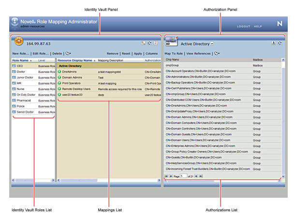

previous
previous
 next
next

The primary work area in the Role Mapping Administrator is called the Main Window. You use the Main Window to perform all of the tasks required to map authorizations to Identity Manager roles and to manage (create, edit, delete) Identity Manager roles.
Figure 1 Role Mapping Administrator Interface
The Identity Vault panel contains two lists: the list and the list. The list displays the roles that you are authorized to manage. The list displays any authorizations that are mapped to it, the name of the resource to which an authorization is mapped, and the mapping description. You can reload and edit the mapping. After you select a role, the list displays any authorizations that are mapped to it.
The Identity Vault panel also contains options to refresh roles from the Identity Vault, filter the roles that you see in the list, and manage (create, edit, and delete) roles.
The Authorizations panel displays the authorizations that are available for mapping to Identity Manager roles. To map an authorization to a role, you select the role in the list, select the authorization in the list, then drag the authorization to the list.
Depending on how your Identity Manager environment is configured, you might have more than one system. The list displays only the authorizations from the managed system that is currently selected in the list box at the top of the panel. To view authorizations from another system, you must select that system from the list.
The Authorizations panel also contain options to refresh authorizations from the Role Mapping Administrator database, reload the Role Mapping Administrator database with authorizations from the available managed systems, and filter the authorizations that you see in the list.
For trademark and copyright information, see Legal Notices.